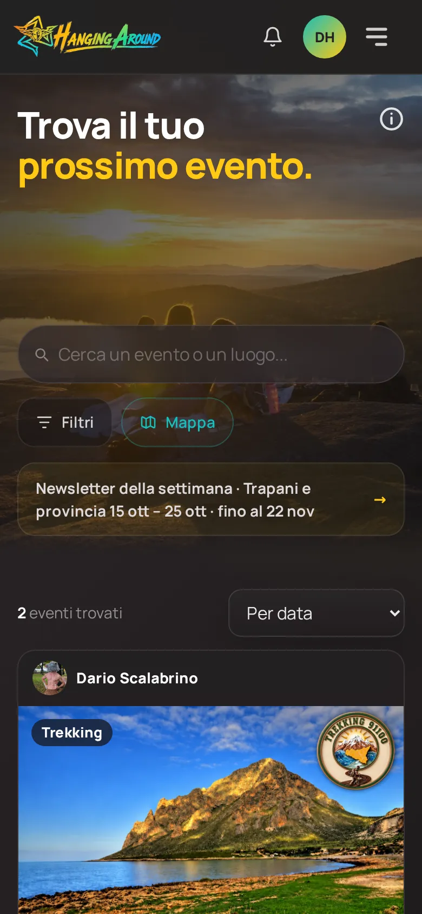
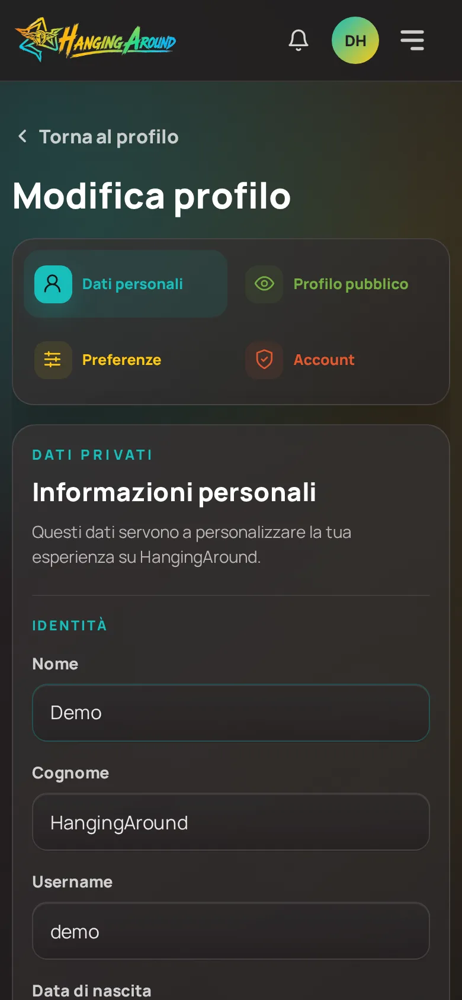
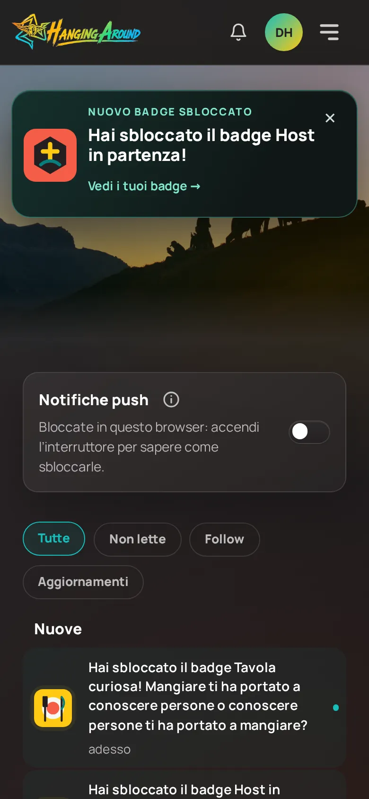
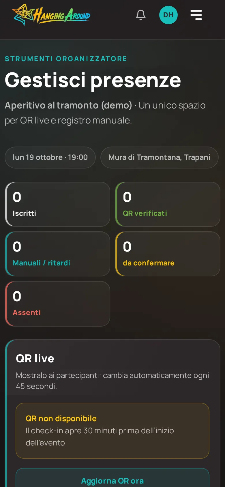

Case Study · Social Events Platform · Web & Mobile
A social app that turns shared passions into real-world meetups. People discover hobbies and activities happening around them and join others nearby — designed for the Sicilian territory to fight social isolation and grow local communities. Live in production at hanging-around.com.




Mobile view of hanging-around.com — landing and private areas
Sicily is a territory marked by strong social closure and low bridging social capital — people stay inside tight, familiar circles and rarely connect across groups. For anyone new to a place, or simply looking to pursue a hobby with others, there was no simple way to find who is doing what, where, and when.
Existing social networks optimise for online engagement, not for actually meeting up. The need was a tool that starts from a shared interest and ends with people in the same room.
Hanging Around was born from a simple question: "what if joining an activity near you was as easy as liking a post?" Instead of feeds, the app is organised around interests and local activities you can actually attend.
Goal
Turn shared passions into real meetups.
Target
Young people & newcomers in Sicilian towns.
Outcome
Stronger, wider local communities.
Two clients — a web app (HTML, CSS, vanilla JS, Tailwind, installable as a PWA) and a React Native / Expo app — share one Nest.js REST API. Nest also serves the static web app, so the whole product ships as a single service. Data lives in PostgreSQL (Neon) through Prisma; media go to Cloudinary with server-signed uploads, emails through Resend.
Request flow — from a tap to the database and back
The JSON response travels back up the same chain and the client updates the UI. Each layer has one job, which keeps the code testable and easy to reason about.
Web
HTML, CSS and ES-module JavaScript with Tailwind CSS v4 — service worker, web manifest and push notifications; Leaflet + OpenStreetMap for the event map. E2E tests with Playwright.
Mobile
React Native with Expo and Expo Router — the same API, native QR scanning and location for check-in.
Backend
Nest.js 11 — modules for auth, users, events, badges, notifications, uploads, reports, newsletter and the AI assistant. JWT + Passport, Helmet, rate limiting, Jest tests.
Data & services
PostgreSQL on Neon via Prisma 7 · Cloudinary for images · Resend for email · Web Push · a Python RAG voice assistant that reads data directly but writes only through the API with the user's JWT.
Why: an opinionated structure (modules, controllers, services, dependency injection) that scales cleanly as features grow.
How: Controller → Service layers per domain, DTO validation, JWT guards, throttling and Helmet; it also serves the static web app.
Payoff: a predictable, testable backend where every responsibility lives in one obvious place.
Why: the data is relational — users, events, attendances, follows, badges, reviews — and the schema should be the single source of truth.
How: 21 models with versioned migrations and generated TypeScript types, hosted on Neon serverless Postgres.
Payoff: type-safe queries end to end and zero database ops.
Why: the website is the storefront and must be fast, indexable and installable — no framework build needed.
How: vanilla ES modules, Tailwind CSS v4, service worker for offline and push notifications, optimised WebP images, Playwright tests.
Payoff: one deploy, no client build step, and a mobile experience close to a native app.
Why: one codebase for iOS and Android, with native modules (camera, location) ready to use.
How: Expo Router screens on top of a thin API client that attaches the auth token to every request; builds with EAS.
Payoff: fast iteration and a native feel without maintaining two separate apps.
Why: a managed Node host with HTTPS and a health check, fronted by a CDN and DNS we control.
How: the Nest.js service runs on Render; Cloudflare handles DNS and proxying for hanging-around.com, and the Render subdomain permanently redirects (308) to the canonical domain.
Payoff: a real production URL, one canonical domain for SEO, and no servers to maintain.
Making attendance impossible to fake
Solved: a static QR can be photographed and forwarded, so the token is server-signed, time-boxed and rotates every 45 s; if location fails, the check-in stays pending for the organiser instead of blocking the user. Learned: the hard, boring piece is what gives the rest of the product its value.
Letting an AI act without opening a second door
Solved: the assistant reads data directly but every write goes through the Nest.js API with the user's own JWT. Learned: authorization should live in exactly one place.
Going to production
Solved: health check endpoint, trust-proxy and rate-limit tuning behind Cloudflare, canonical-domain redirect from Render, secrets only in environment variables. Learned: shipping is its own feature — and it has a checklist.
Structuring a growing Nest.js backend
Solved: committed to one module per domain with the Controller/Service split. Learned: putting each responsibility in one obvious place pays off the moment more developers join.
Want to see it in action?